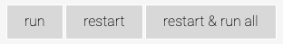
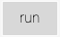
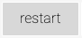
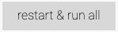

Welcome to the Computational Geosciences resource#
Welcome to the Computational Geosciences resource at the University of Stavanger (UiS), Norway. This is an educational project funded by the Faculty of Science and Technology at UiS. The resource is made by students and faculty from the departments of Energy Resources (IER) and Mechanical and Structural Engineering (IMBM).
Students: Angela Hoch (IER), Adham Amer (IMBM), Vania Mansoor and Linda Olsen (IER).
Postdocs: David Oakley (IER)
Faculty (UiS): Nestor Cardozo (IER), Lisa Watson (IER), Wiktor Weibull (IER), and Knut Giljarhus (IMBM).
In addition, Associate Professor Alex F. Antunes, at the Department of Geology, Federal University of Rio Grande do Norte (URFN/Brazil), implemented the resource as a fully interactive Jupyter Book.
Please feel free to use this material for teaching and research. If you have any comments or want to contribute to the resource, please contact me at nestor.cardozo@uis.no
Manual: Working with the resource#
The resource consists of a book in pdf format, and a source folder where data, functions and notebooks are included. The book is a large, full-resolution file (18 MB). Alternatively, the resource can be reviewed using this Jupyter Book.
The programming language of choice is Python, and our approach is as follows: We introduce briefly the theory and applications, implement them in Python functions, and illustrate them using Jupyter notebooks.
Clone the repository#
The best way to work with the resource is to clone this repository. This saves all material to your local machine. It behaves almost like a copy.
Open a terminal.
Navigate to the folder where you would like to store the local copy of the repository. (cd
foldername)Press the green button Code on the right hand side and copy the path in the Clone section.
Execute the terminal command
git clone <https://github.com/nfcd/compGeo>.Now you can start working with the resource files. They are saved in the folder you chose in step 2.
Updating your local files#
Once in a while you should update your local files to the latest changes in the repository. This is important since we will be making changes and including new chapters along.
Open a terminal.
Navigate inside the folder of the repository on your machine. (cd
foldername)Execute the terminal command
git pull
:::{note} If using this Jupyter Book, you don’t need to clone and update the repository, but you can run the code in the Book interactively.
To run code cells interactively, point the mouse to the icon at the upper right corner of the book and click on . The buttons  will appear.
Click the  button to run the cell, the  button to restart the kernel, or the  button to restart the kernel and run all cells. :::
:::{note} The cells in this notebook are run via Binder. Sometimes it can take long time for the kernel to start, and other times it can be quite fast. We have not figured out why this is the case, but it must be related with the installation of dependencies by Binder. We are working on it. In the meantime, be patient. As an example, activate Live Code now and click run in the following code cell: :::
print('Welcome to the Computational Geosciences resource!\n')
print('Please, see below some tips to write beautiful and clean code in Python:\n')
import this
:::{note} Book content can also be run as Jupyter notebooks via Binder. To do so, click on the icon under the icon. :::
Background information#
The notebooks follow the directory structure of the resource, which is based on data, functions and notebooks folders. We recommend that you follow the same directory structure when running the notebooks.
Current state#
The first nine chapters are completed. The latest revision of these chapters on Dec. 2022 was significant. The last chapter (Ch. 10) on the inversion problem is under work.
Check out the content pages bundled with this book to see more.
CONTENTS